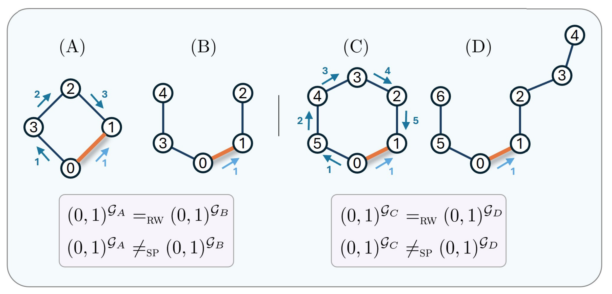
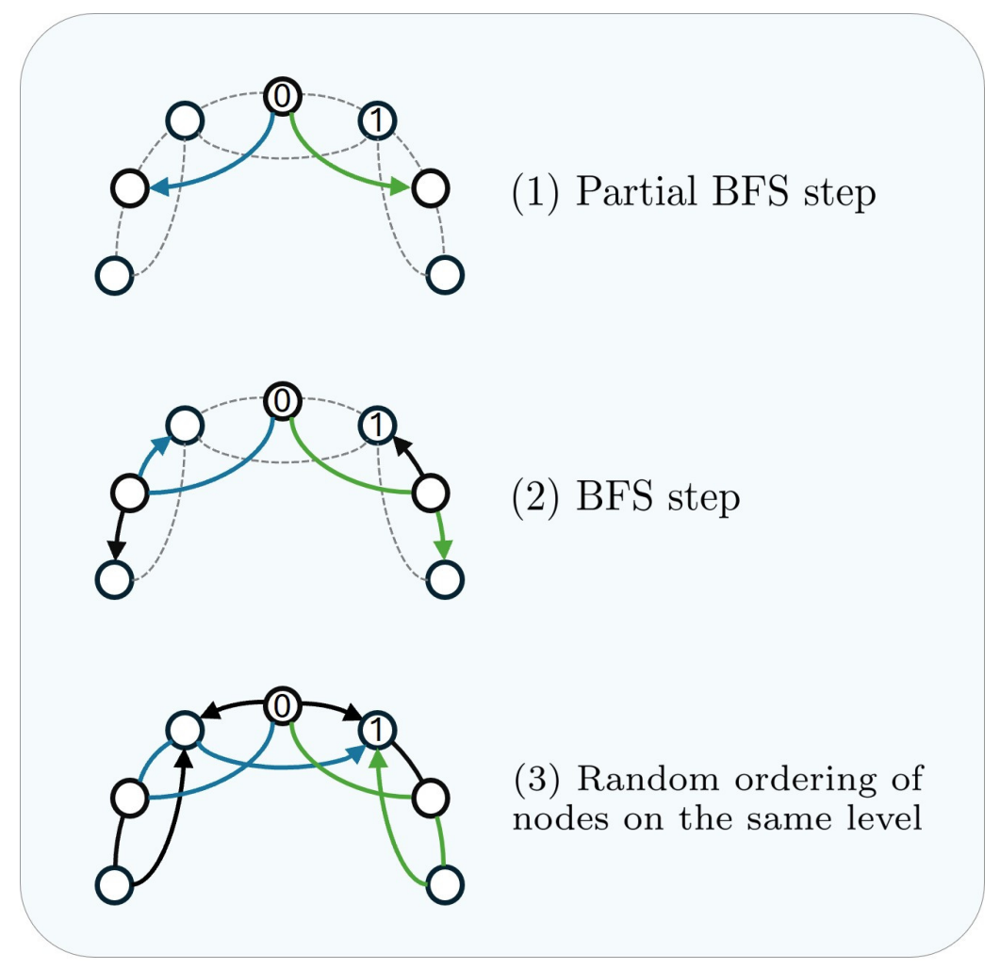
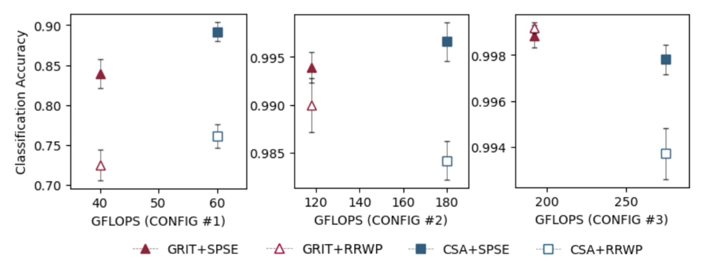

Beyond Random Walks: Simple Path Structural Encoding for Graph Transformers
Graph transformers need structural signals that tell one pair of nodes from another. Simple Path Structural Encoding replaces random-walk probabilities with simple path counts, making cyclic patterns easier to represent.
The problem
Graphs appear in molecules, social systems, citation networks, circuits, and many other domains where the pattern of connections matters. Graph neural networks usually process such data by passing messages locally, but this can make long-range dependencies and some structural patterns hard to capture.
Graph transformers address part of this limitation by using global self-attention: every node can attend to every other node. The difficulty is that graphs have no natural sequence order. A transformer therefore needs positional and structural encodings that describe where nodes and edges sit inside the graph.
Many encodings describe nodes or node pairs through spectral information, shortest paths, heat kernels, or random walks. These signals are useful, but the paper focuses on a specific weakness of Relative Random Walk Probabilities (RRWP): two edges can receive the same random-walk encoding even when they belong to different local graph structures.
What prior encodings miss
RRWP encodes an edge by the probabilities that a random walk of different lengths moves from one endpoint to the other. This is attractive because random-walk matrices are easy to compute in closed form. But probabilities can hide structural differences. In particular, the paper proves that some edges in even-length cycle graphs are indistinguishable, under RRWP, from edges in path graphs.

This matters because cycles are not a decorative detail. In molecular graphs, for example, rings and cyclic substructures can help characterize chemical groups. In social and network analysis, cycles are also tied to local connectivity patterns. An edge encoding that loses this information can make the transformer work harder than necessary.
The key idea
Simple Path Structural Encoding (SPSE) uses counts of simple paths between node pairs as edge features. A simple path is a walk that does not revisit a node. This small change is the core of the method: instead of asking how likely a random walk is to land at a node, SPSE asks how many non-repeating paths of each length connect two nodes.
For adjacent nodes, this has a direct structural meaning. The number of simple paths of length k between the endpoints corresponds to the number of cycles of length k + 1 that contain that edge. This makes SPSE naturally suited to representing cyclic local structure.
SPSE is designed as a drop-in replacement for RRWP in graph transformer architectures such as GRIT and CSA. The path-count tensor is transformed by a shallow edge encoder and then used inside the self-attention layer, where it can bias attention and value computation between node pairs.
How SPSE works
Exact simple path counting becomes expensive as graphs and path lengths grow. The paper therefore proposes an approximate preprocessing algorithm. It decomposes an undirected graph into multiple directed acyclic graphs (DAGs), counts paths efficiently inside those DAGs, and keeps the largest count discovered for each node pair and path length.
The decomposition starts from selected root nodes and combines depth-first search (DFS), partial breadth-first search (partial BFS), and breadth-first search (BFS). DFS helps discover long paths, BFS covers local neighborhoods, and the partial BFS step helps expose paths that would otherwise be hidden by a single traversal order.

The resulting path counts can become very large, so SPSE compresses them with repeated logarithmic transformations before feeding them to the neural network. The preprocessing is more expensive than computing RRWP, but it is performed once and then reused during model training.
What the results show
The paper evaluates SPSE in two ways. First, it uses a synthetic cycle-counting task with 12,000 graphs containing cycles of lengths 3 to 8. Across CSA and GRIT configurations, SPSE achieves higher cycle-counting accuracy than RRWP in all but one reported case. With larger model configurations, both encodings can approach near-perfect accuracy, but SPSE still gives a statistically significant advantage for CSA in the strongest configuration.

Second, the paper tests SPSE on real graph benchmarks: ZINC, PATTERN, CLUSTER, MNIST, CIFAR10, Peptides-functional, Peptides-structural, and PCQM4Mv2. Without task-specific hyperparameter tuning, replacing RRWP with SPSE improves performance in 21 out of 24 comparisons. The strongest gains appear for CSA and GRIT on molecular graphs, where 5 out of 6 improvements are statistically significant under the reported two-sided Student's t-tests.
The results also show where the method is less straightforward. In GraphGPS, SPSE gives smaller improvements because the model only uses the encoding in the message-passing component and keeps the total parameter count fixed. On dense Stochastic Block Model (SBM) graphs, especially CLUSTER, approximate path counts can be harder to estimate accurately, and pure graph transformers do not consistently benefit.
Why it matters
The contribution is not a new transformer architecture. It is a stronger structural edge encoding. SPSE shows that replacing random-walk probabilities with simple path counts can give graph transformers more direct access to local cyclic structure while preserving the same number of trainable parameters in the tested RRWP replacement setting.
This is especially relevant for graph learning tasks where edge neighborhoods and cycles carry information, such as molecular prediction and long-range graph benchmarks. The paper also clarifies an important design lesson: global attention still needs graph-aware structure, and the choice of edge encoding can change what the model can easily distinguish.
Limitations
SPSE is computationally more expensive than RRWP during preprocessing. The approximate algorithm returns lower bounds on exact path counts, because it does not enumerate and store every individual path. This can be limiting for dense graphs, where many paths may be missed or undercounted.
The paper therefore presents SPSE as a promising structural encoding, not as a universal replacement for every graph setting. Larger graphs, denser graphs, and interactions with other transformer architectures remain important directions for future work.
Main references
- Louis Airale, Antonio Longa, Mattia Rigon, Andrea Passerini, and Roberto Passerone. Simple Path Structural Encoding for Graph Transformers. Proceedings of the 42nd International Conference on Machine Learning, PMLR 267, 2025. Paper PDF. Code repository.
- Ma et al. Graph Inductive Biases in Transformers without Message Passing. International Conference on Machine Learning, 2023. Introduces the RRWP-based GRIT setting used as a main baseline.
- Menegaux et al. Self-attention in Colors: Another Take on Encoding Graph Structure in Transformers. Transactions on Machine Learning Research, 2023. Provides the CSA graph transformer baseline.
- Dwivedi et al. Benchmarking Graph Neural Networks. Journal of Machine Learning Research, 2023, and Long Range Graph Benchmark, 2022. Provide several benchmark datasets used in the experiments.
- Rampašek et al. Recipe for a General, Powerful, Scalable Graph Transformer. Advances in Neural Information Processing Systems, 2022. Provides the GraphGPS architecture considered in the experiments.
- Perepechko and Voropaev. The Number of Fixed Length Cycles in an Undirected Graph, 2009, and Giscard et al. A General Purpose Algorithm for Counting Simple Cycles and Simple Paths of Any Length, 2019. Provide background on path and cycle counting.
- Michel et al. Path Neural Networks: Expressive and Accurate Graph Neural Networks, 2023, and Graziani et al. The Expressive Power of Path-Based Graph Neural Networks, 2024. Motivate the expressive value of path-based graph representations.
Source note
This post summarizes Simple Path Structural Encoding for Graph Transformers by Louis Airale, Antonio Longa, Mattia Rigon, Andrea Passerini, and Roberto Passerone, published in the Proceedings of the 42nd International Conference on Machine Learning, Vancouver, Canada, PMLR 267, 2025.